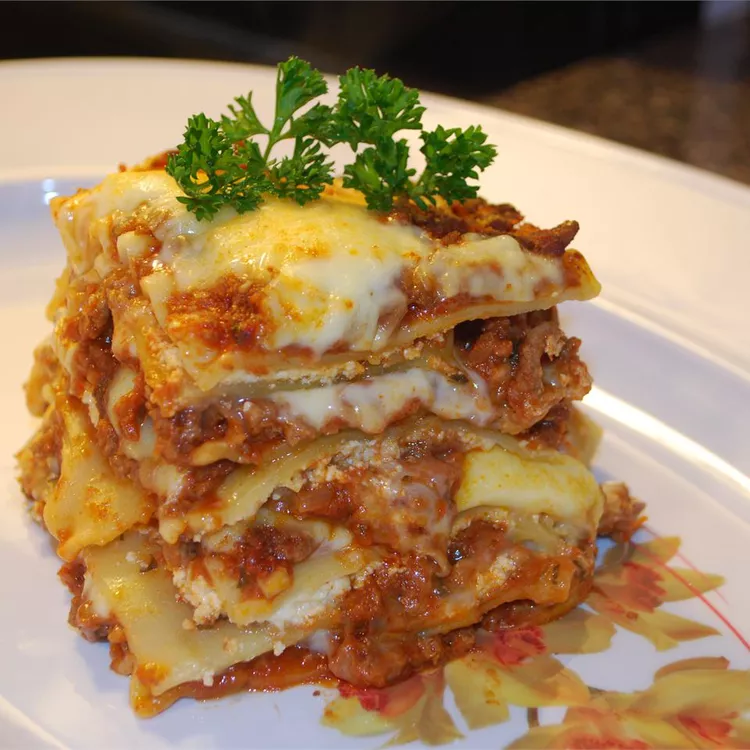

Preparando lasanha

O Melhor Ziti Assado
Você pode facilmente iluminar a lasanha e economizar uma quantia decente de dólares usando queijo cottage em vez de ricota - você ainda obtém o mesmo sabor e conforto , mas não é tão farto e pode ser muito mais fácil de digerir para pessoas com pequenas sensibilidades a laticínios.
Bata o requeijão previamente com um mixer para que fique com uma consistência mais próxima da ricota.
Ingredientes
- - 500 g de massa de lasanha
- - 300 g de carne moída
- - 250 g de presunto
- - Sal a gosto
- - 1 cebola ralada
- - 3 colheres de Óleo
- - 2 caixas de molho de tomate
- - 3 dentes de alho amassados
- - 1 pacote de queijo ralado
Montagem
- - Despeje uma parte do molho à bolonhesa em um refratário, forre com uma camada de massa, a metade do presunto, a metade da mussarela e acrescente novamente o molho e o restante da massa.
- – Repita as camadas até a borda do recipiente.
- – Finalize com o queijo ralado e leve ao forno alto (200° C), preaquecido por cerca de 25 minutos